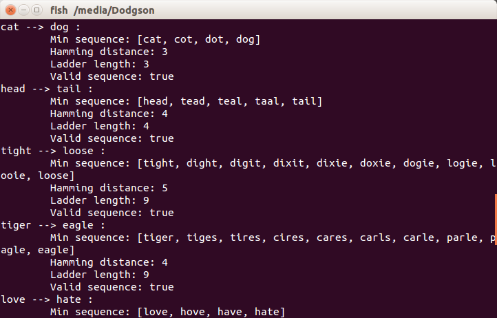

<div class="board" id="board-flw" align="center" style="margin-top:20px">

    <div align="left" class="desc">
        <p>Dodgson is a program I wrote that finds a shortest solution for the game of <a href="http://en.wikipedia.org/wiki/Word_ladder" target="_blank">Word Ladder</a>, which was invented by Charles Dodgson. The game involves two words and the goal is to make the first word into the second word, using intermediate words differ with only one alphabet.</p>
    </div>

    

</div>